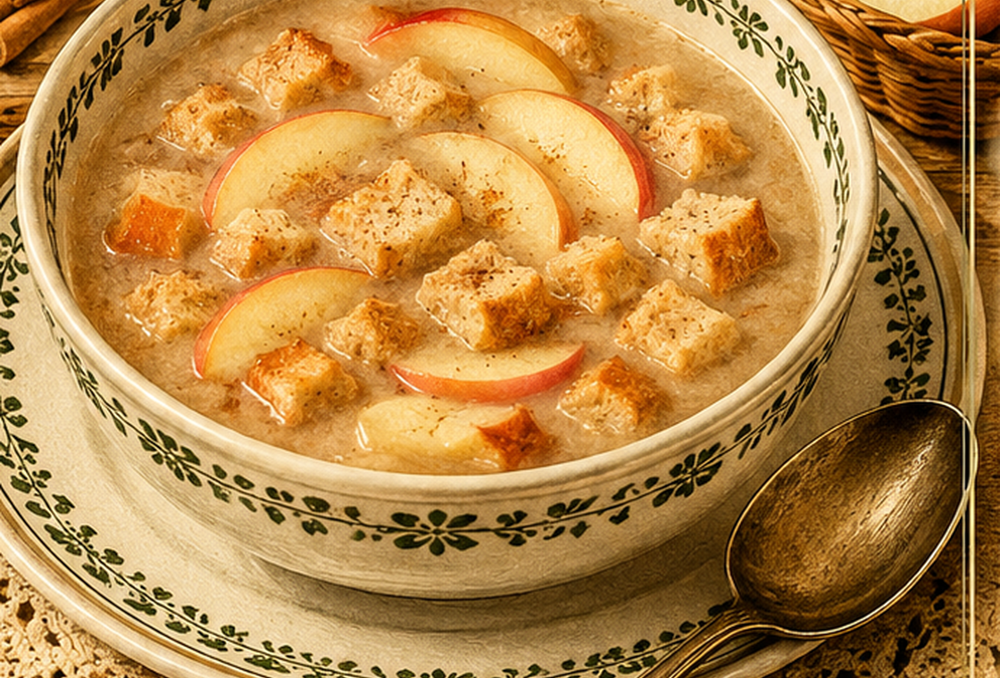

Apfelbrotsuppe
Eine süße Brotsuppe mit Äpfeln, Zucker und Zimt.

Originale Überlieferung
Fein geschnittenes Brot wird mit Wasser, Salz, Zucker und Zimtschale aufgekocht. Äpfel werden weich gekocht und durchgeschlagen; anschließend lässt man die Suppe noch einmal aufkochen.
Moderne Übertragung
Altbackenes Brot und säuerliche Äpfel werden mit Wasser, Zucker und Zimt weich gekocht. Ein Teil der Suppe wird zerdrückt oder passiert, damit sie sämig wird.
Zutaten
- 200 g altbackenes Brot
- 3 säuerliche Äpfel
- 1,5 l Wasser
- 4 EL Zucker
- 1 Stück Zimtschale oder Zimtstange
- 1 Prise Salz
Zubereitung
- Brot klein schneiden. Äpfel schälen, entkernen und in Stücke schneiden.
- Wasser, Brot, Äpfel, Zucker, Zimt und Salz aufkochen.
- Bei kleiner Hitze garen, bis Brot und Äpfel sehr weich sind.
- Zimt entfernen und die Suppe nach Wunsch teilweise passieren oder zerdrücken.
- Noch einmal kurz aufkochen und warm servieren.